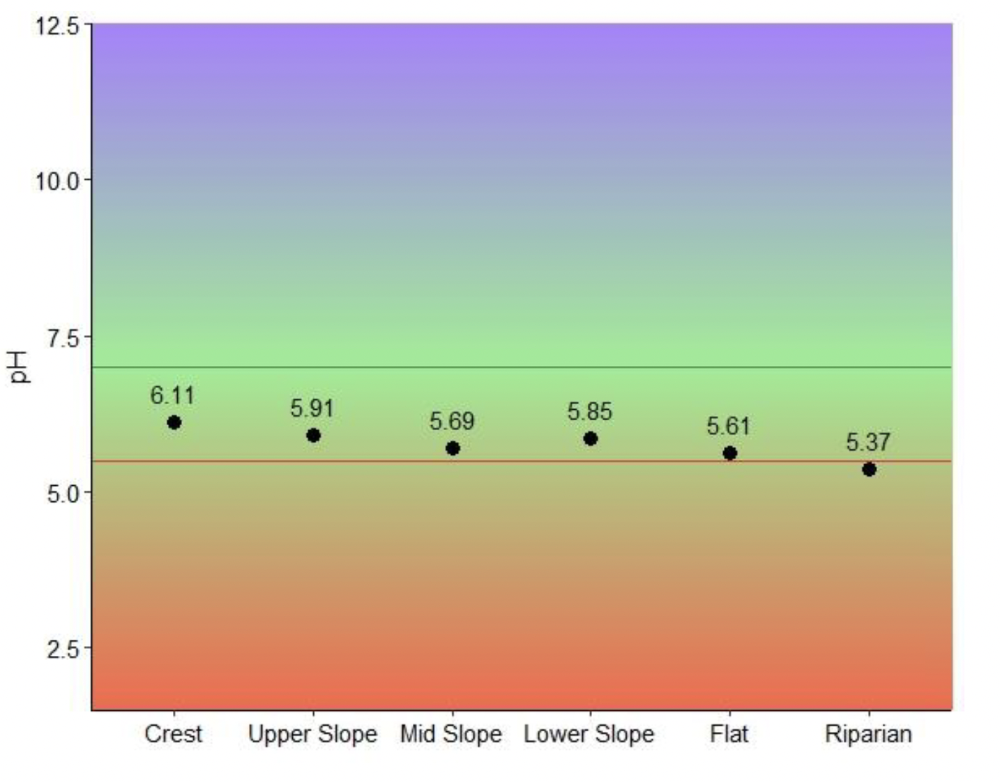

Entry by Bonnie Martin-Stuart

For part of my Honours thesis, I undertook topsoil sampling surveys that utilised a systematic sampling protocol. Systematic sampling uses a zigzag pattern of randomly selected soil cores (to a depth of 0.15 m) across a series of transects stratified by soil type in an area or paddock (Hazelton and Murphy 2016). This method is ideal for diagnosing nutrient deficiencies and for gaining representative results from irregularly shaped landforms (Environmental Analysis Laboratory, n.d.; Local Land Services 2020). The cores taken from an area are bulked, that is, they are placed in a bucket or bag and combined to form a composite homogenous mix from which a sample is taken for analysis (Brown 1999). The topsoil pH across the study site ranges from slightly acidic on the crest, to moderately acidic on the upper slope, mid slope, lower slope and on the flat, and strongly acid in the riparian zone. Soils that are strongly acid, below 5.5 pH, can have chemical characteristics that inhibit plant growth. For example, low pH can result in the mobilisation of exchangeable aluminium (Al3+) into the soil solution causing toxic conditions for plants (Hazelton and Murphy 2016). For this study site the topsoil in the riparian zone was strongly acid and this corresponded with higher measures of exchangeable aluminium in this part of the landscape. I wanted to illustrate the pH scale using a colour gradient matched to the indicator colours of field pH kits, purple indicating alkaline conditions, green neutral conditions ideal for plant growth, and red acidic conditions. I think this method of representation accurately illustrates both the optimum range of soil pH for plant growth and where the data points sit along this spectrum.